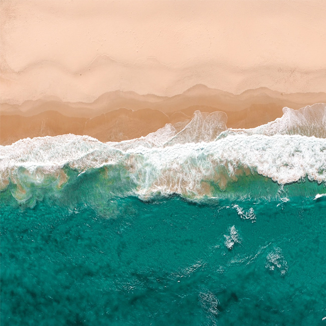
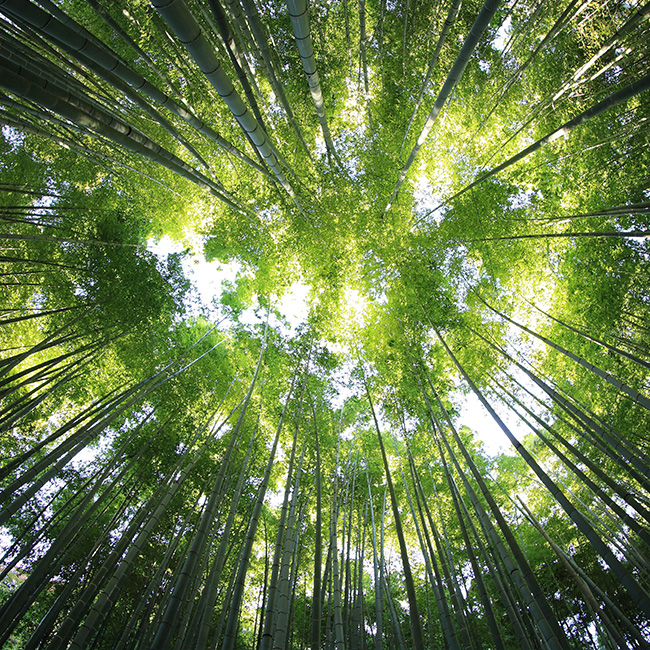
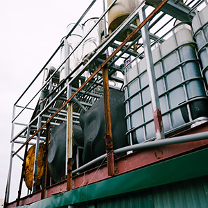
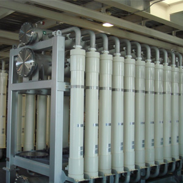
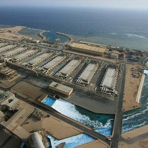
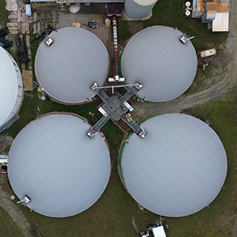

home > 기술혁신 > 환경분야 R&D
환경분야 R&D
KUMHO E&C
Engineering & construction
- 아름다운 가치를 향한금호건설의 발걸음 환경분야에서는 사람과 자연이 건강하고 쾌적하게 어울릴 수 있는 환경을 조성하고 환경적으로 건전 하고 지속가능한 개발이 이루어질 수 있도록 오염된 환경의 복원 및 향후 추가적인 오염 방지를 위한 기 술 개발 및 적용에 힘쓰고 있습니다.
- 
- 환경을 생각하는금호건설의 R&D 고도정수처리, 하수고도처리, 하상 퇴 적물 처리, 오염토양 복원 등 다양한 분야의 기술에 대한 연구를 수행하고 있으며, 축산분뇨 및 음식물 쓰레기 등의 유기성 폐기물을 이용한 바이오가스 생 산 및 에너지화 기술 등 신재생 에너지 개발 연구에 도 주력하고 있습니다.
- 
주요 연구분야
- 막여과를 이용한 고도정수처리 시스템 개발
- 고효율 역삼투법(RO) 해수담수화 시스템 개발
- 고효율 하수재이용 시스템 개발
- 미세기포를 이용한 고효율 부상분리 시스템 개발
- 하수고도처리 MBR 시스템 개발 (K-MBR, KUMHO-MBR)
- 혐기성 소화를 이용한 유기성 폐기물 처리 및 biogas 생산기술 개발
기술정보
-

- 고효율 역삼투법 해수담수화 / 하수 재이용 공법
- 전처리 공정에 막여과(MF) 공법을 적용하여 역삼투막의 오염저감을 통해 역삼투막의 성능을 향상시키고, 고내압성 역삼투막과 에너지 회수장치를 적용하여 기존의 역삼투 시스템의 회수율을 대폭 향상시킨 고효율 저에너지 수처리 기술
-

- 막여과 정수 처리 공법
- 전처리 공정에 막여과(MF) 공법을 적용하여 역삼투막의 오염저감을 통해 역삼투막의 성능을 향상시키고, 고내압성 역삼투막과 에너지 회수장치를 적용하여 기존의 역삼투 시스템의 회수율을 대폭 향상시킨 고효율 저에너지 수처리 기술
-

- KUMHO-MBR 공법
- 분리막(평막)을 이용한 하·폐수 고도처리 기술로, 하수의 유입부하 변동에 따라 반응조 내 유입 및 반송 모드 변화를 가능하게 하여 질소 및 인의 제거효율을 향상시킨 MBR 공법 (MembraneBio-Reactor)
-

- KH-ABC 공법
- 음식 물류 폐기물, 가축 분뇨 및 하수슬러지 등의 고농도 유기성 페기물을 수평형 형태의 혐기소화조를 이용해 바이오가스를 생산하는 기술로, 상하교반장치를 이용해 고형물 침적을 저감시키고 소화조 일체형 생물탈황 장치를 이용하여 탈황설비 용량을 감소시킨 기술